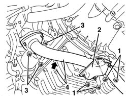
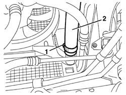
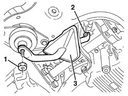
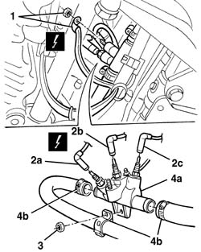
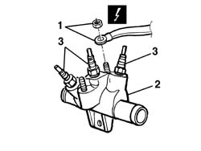
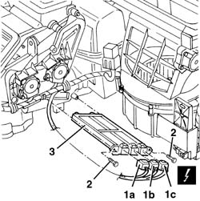
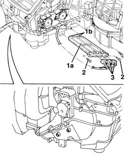

5020L10 additional heater system boiler - r r
- Path
- Procedures > 50 AUXILIARY UNITS > 5020 HEATER > 5020L additional heater > 5020L10 additional heater system boiler - r r
- Kind
- repair procedure (removal / refitting; the operation number is the code)
- Applies to
- engines: 1.9 JTD 8v , 2.4 JTD 10v; all production periods
- Interactive page
- https://sloeber94.github.io/elrnDB-a156/en/#/3238296
Applies to: engines: 1.9 JTD 8v , 2.4 JTD 10v; all production periods
 Removing
Removing
 Refitting
Refitting7055B54 under-engine guard - r r
1. Working underneath the engine compartment, undo the nuts fixing the bracket.
2. Remove the bracket.
3. Undo the nuts fixing the flange.
4. Move the exhaust pipe to the side and fix it temporarily.

Applies to: engines: 1.9 JTD 8v , 2.4 JTD 10v; all production periods
Position a suitable container for collecting the coolant under the right side of the radiator.
1. Loosen the band securing the right radiator pipe.
2. Disconnect the right radiator pipe and drain the coolant.

Applies to: engines: 1.9 JTD 8v , 2.4 JTD 10v; all production periods
1. Undo the nut.
2. Unscrew the bolt.
3. Recover the flexible engine mounting.

Applies to: engines: 1.9 JTD 8v , 2.4 JTD 10v; all production periods
1. Disconnect the front earth loom for the heater.
 | Name | Connector |
|---|---|---|
1 | Earth cable loom for additional heater |
2. Disconnect the electrical connections (2a, 2b, 2c) for the spark plugs (press fit).
| Name | Connector |
|---|---|---|
2a | Additional heater resistance |
| Name | Connector |
|---|---|---|
2b | Additional heater resistance |
| Name | Connector |
|---|---|---|
2c | Additional heater resistance |
3. Undo the nut.
4. Move the heater (4a) slightly and loosen the bands (4b), then disconnect the pipes.

Applies to: engines: 1.9 JTD 8v , 2.4 JTD 10v; all production periods
1. Disconnect the rear earth loom.
| Name | Connector |
|---|---|---|
1 | Earth cable loom for additional heater |
2. Recover the heater.
3. If necessary, undo the spark plugs.

Applies to: engines: 1.9 JTD 8v , 2.4 JTD 10v; all production periods
Refitting
RemovingCheck that the additional heating system heater is not damaged.
If removed, tighten the spark plugs.
Connect the rear earth loom.
Connect the pipes to the haeter and secure them using the bands.
Position the heater and tighten the nut.
Connect the electrical connections to the spark plugs (press fit).
Connect the front earth loom.
Position the flexible engine mounting, then secure it using the nut and the bolt.
Connect the right radiator pipe and secure it using the band.
Position the exhaust pipe and tighten the nuts fixing the flange.
Position the bracket and secure it using the nuts.
Refill the engine cooling circuit using the recommended fluid.
 | Type | Component | Name | Qty. |
|---|---|---|---|---|
- | Fluid | ENGINE COOLING CIRCUIT | Alfa Romeo Climafluid Super Permanent - 40 °C | - |
Visually inspect that there are no leads from the cooling circuit.
7055B54 under-engine guard - r r
Check that the additional heating system is working properly.
Applies to: engines: 1.9 JTD 8v , 2.4 JTD 10v; production: da 03/02 a 09/03, da 10/03
Removing
Refitting7040G24 switch for facia compartment light - r+r
7040G20 facia compartment light bulb holder - r+r
7040A65 passenger compartment box lock , one , r r (left and right sides)
7040L37 gear lever plate - r r
5040D18 air conditioner control unit - r r
7040A25 central facia trim - r r
5560C51 combined analogue control panel - r+r or replace
5010C24 upper air outlet on facia - r r
5010C12 Windscreen demising VENT - R.R.
7040A44 facia lh side cover - r r
7040A45 facia rh side cover - r r
7040A09 passenger air bag compartment cover - r r
5580C22 AIR BAG MODULE - Passenger side - R.R.
5540C18 headlamp/light cluster alignment correction motor switch - r+r
4110A11 steering wheel - r+r for replacement or check for versions with air bag
7040A26 steering column trim - r+r
5550A12 complete stalk unit - r+r for versions with air bag
7040A10 instrument facia trim - r+r
1. Disconnect electrical connections (1a), (1b), (1c).
| Name | Connector |
|---|---|---|
1a | Additional heater resistance |
| Name | Connector |
|---|---|---|
1b | Additional heater resistance |
| Name | Connector |
|---|---|---|
1c | Additional heater resistance |
2. Undo the bolts fixing the additional heater.
3. Extract the additional heater.

Applies to: engines: 1.9 JTD 8v , 2.4 JTD 10v; production: da 03/02 a 09/03, da 10/03
Refitting
RemovingCheck that the additional heater is not damaged and, if necessary, conduct an electrical test.
1. Fit the additional heater (1a) and engage the retainers (1b) in the housings (1c) in the climate control casing.
2. Tighten the retaining bolts.
3. Connect the electrical connection.

Applies to: engines: 1.9 JTD 8v , 2.4 JTD 10v; production: da 03/02 a 09/03, da 10/03
7040A10 instrument facia trim - r+r
7040A10 instrument facia trim - r+r
5580C22 AIR BAG MODULE - Passenger side - R.R.
7040A09 passenger air bag compartment cover - r r
5010C12 Windscreen demising VENT - R.R.
5010D56 solar sensor - r r after checking electrical system
- 5560B56 TRIM with SWITCHES/BUTTONS FOR MULTIFUNCTION DISPLAY AND HEADLAMP alignment ADJUSTMENT - R.R.
- 5560B11 analogue control panel - r+r or replace
5550A12 complete stalk unit - r+r for versions with air bag
7040A26 steering column trim - r+r
4110A11 steering wheel - r+r for replacement or check for versions with air bag
5580C26 LOCK BARREL KEY/SWITCH for deactivating passenger 'AIR BAG - R.R.
5040D18 air conditioner control unit - r r
- 7040A80 compartment unit on facia r r
3380A44 handbrake/linkage protection - r+r
7040A65 passenger compartment box lock , one , r r (left and right sides)
Check the operation of the additional heater.
Topics linked from this page (36)
- 3380A44 handbrake/linkage protection - r+r
- 4110A11 steering wheel - r+r for replacement or check for versions with air bag
- 5010C12 Windscreen demising VENT - R.R.
- 5010C24 upper air outlet on facia - r r
- 5010D56 solar sensor - r r after checking electrical system
- 5040D18 air conditioner control unit - r r
- 5540C18 headlamp/light cluster alignment correction motor switch - r+r
- 5550A12 complete stalk unit - r+r for versions with air bag
- 5560b02 kilometre/mileometer - r r
- 5560B03 rev counter - r r
- 5560C51 combined analogue control panel - r+r or replace
- 5560C60 anomaly display - r+r
- 5570T80 car radio unit - r+r
- 5580C air bag system
- 5580C18 air bag module - r+r
- 5580C22 AIR BAG MODULE - Passenger side - R.R.
- 5580C26 LOCK BARREL KEY/SWITCH for deactivating passenger 'AIR BAG - R.R.
- 7040A09 passenger air bag compartment cover - r r
- 7040A10 instrument facia trim - r+r
- 7040A25 central facia trim - r r
- 7040A26 steering column trim - r+r
- 7040A31 flap assembly - r r
- 7040A37 fuse box cover - r r
- 7040A44 facia lh side cover - r r
- 7040A45 facia rh side cover - r r
- 7040A65 passenger compartment box lock , one , r r
- 7040G20 facia compartment light bulb holder - r+r
- 7040G24 switch for facia compartment light - r+r
- 7040L20 tunnel trim - r r
- 7040L37 gear lever plate - r r
- 7055B54 under-engine guard - r r
- 7065C42 ashtray (one) r+r
- C41 Earth cable loom for additional heater
- O25A Additional heater resistance ( ABS )
- O25B Additional heater resistance ( ABS )
- O25C Additional heater resistance ( ABS )